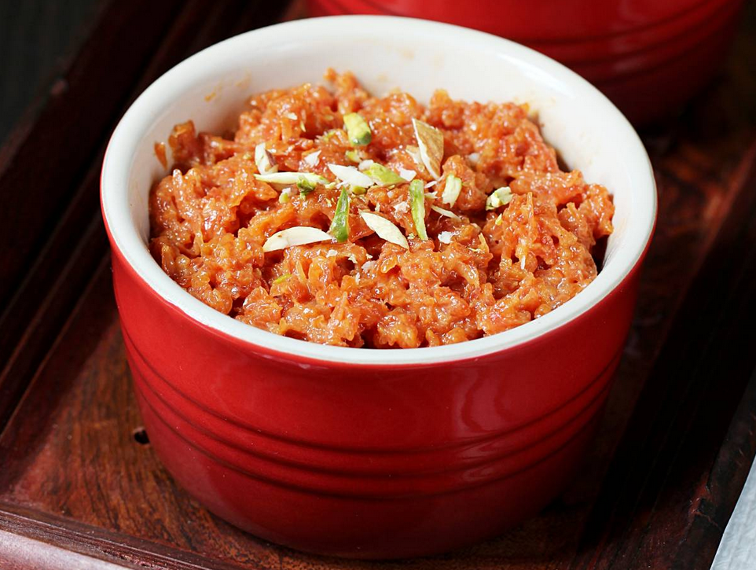

Carrot Halwa

Description
Carrot halwa or gajar halwa is a traditional dessert made by slow cooking carrots in milk.
This recipe will help you make an incredible carrot halwa, perfect to serve at a wedding or party.
Ingredients
Steps
- Finely chop the carrots
- Cook the carrots over a medium heat for 2 hours, along with the milk and ghee
- Garnish with almonds, and serve with a scoop of vanilla ice cream.